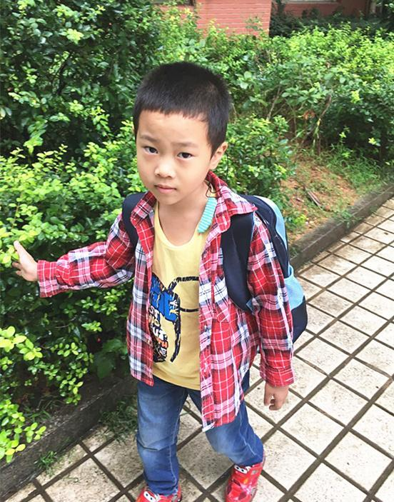
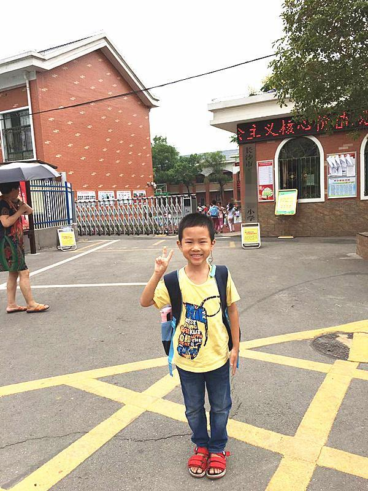

2017年9月1日，极重度听力障碍的康康成为了一名一年级的新生，康康妈妈像所有的学生家长一样，开始每天检查康康作业督促他学习；跟其他妈妈不一样是，她要不时开导康康：耳蜗就像眼镜，不能摘，摘了就听不到了。因为康康现在就读于普通小学，他非常渴望和同学们一样不用带他的“小耳朵”去上学。
康康家有6口人，爸爸妈妈在城里打工赚钱，他和爷爷奶奶还有失明的太奶奶生活在农村的家中，虽然家庭并不富裕甚至由于老人多并且身体也不太好，这个家还有些清贫，但在乡间的生活是简单而快乐的，直到2014年底，原来还能说些话的康康不能再开口说话，妈妈带他到长沙的医院，才发现康康是极重度感音神经性耳聋，这个时候康康已经4岁了，如果不能及时植入人工耳蜗，康康可能会失去最佳康复期。
【爱的分贝简介】
爱的分贝，成立于2012年3月2日，由众多播音员主持人共同发起的一项针对贫困聋儿进行救助的公益项目，隶属于中华思源工程扶贫基金会。
爱的分贝旨在通过人工耳蜗手术植入资助、听力语言康复资助、听障儿童家长培训、中小康复机构能力建设、爱耳知识宣传等多样化的形式，从资金支持、政策咨询、就医指导、康复教育师资培训、机构教辅教具提供等多个方面为听障儿童群体提供支持和帮助。
五年时间，通过线上月捐平台等捐赠渠道已有160余万爱心捐赠人，爱的分贝累计为10000多个听障儿童家庭提供了救助服务，并直接资助近2500多个贫困听障儿童家庭，让400位听障儿童接受了人工耳蜗植入手术，对超过1000位听障儿童进行了康复训练，培训了1100多位听障儿童家长。 曾获得“中华慈善推动者”、“联合国可持续发展行动网络成员”称号、“英国大使馆文化教育处公益创新奖”和“最受欢迎的互联网公益项目奖”。
【捐赠发票索取】
爱的分贝将会为捐赠100元（含）以上的捐赠人开具捐赠票据。索取票据请发邮件至：fapiao@i-db.com.cn，回复（发票抬头、捐助项目名称、联系人姓名、地址、电话、邮编、捐赠截图（包含捐赠项目、捐赠金额和交易单号），在收到开票申请信息的次月初，我们会开具票据并通过挂号信寄出，请务必提供有效的收件地址和姓名，以免信件被退回。联系电话：85780900转8100。
【项目备案】
该项目已在【慈善中国】备案，公开募捐活动备案编号：53100000500020462KA18001，您可登录【慈善中国】查询。 慈善中国，即全国慈善信息公开平台，于2017年9月4日正式开通，是民政部依据《慈善法》关于“信息公开”要求而建设的统一信息平台，用于慈善组织、慈善信托受托人等参与主体面向社会公开慈善信息。
-
暂时没有
暂时没有
暂时没有
-
暂时没有
暂时没有
暂时没有
-
暂时没有
暂时没有
暂时没有
推荐项目
-
[医疗救助] 给困境儿童送面包
HELLO小孩”爱心套餐是中国儿童少年基金会面向广大贫困家庭儿童和留守儿童以及因自然灾害、突发事故的儿童于2015年底启动的公益项目。包括日常学生套餐和灾后应急套餐两款，根据季节不同，又分为春夏和秋冬两个搭配方案
-
[医疗救助] 大山里的健康小课桌
拍这张照片的时候，交梨小学的同学们正在上讨论课后作业。一直趴在破旧的课桌椅上写作业的他们，字终于不再歪歪倒倒了，终于可以在平整的桌面写字了